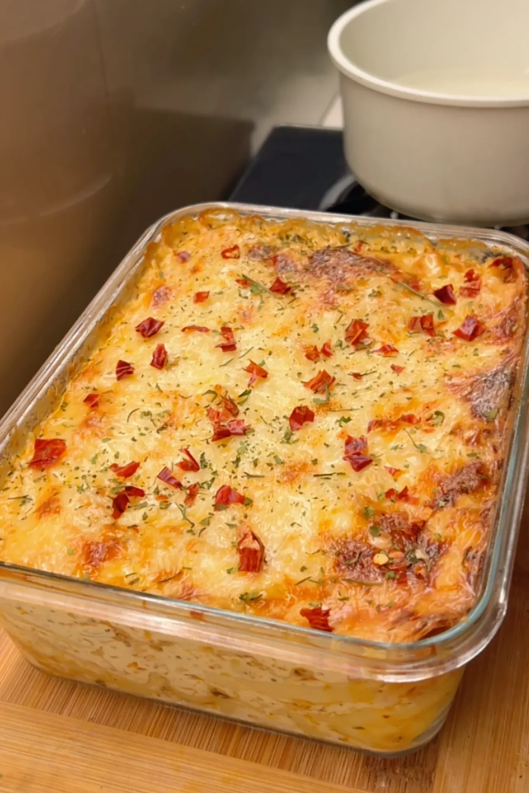

Alfredo-Lasagna

Description:
Enjoy this creamy, cheesy, and flavorful Chicken Parmesan Lasagna with a crispy top and layers of delicious chicken, cheese, and a rich, flavorful sauce!
Ingredients:
For marination:
- 1.5 pounds chicken (boneless, skinless breasts or thighs)
- 1 tsp black pepper
- 1/2 tsp onion powder
- 1 tsp Italian seasonings (or a mix of oregano, parsley, and basil)
- 1 tsp garlic powder
- 1 tsp cayenne pepper
- 1 tbsp butter
- 1 tsp olive oil
For sauce:
- 5 tbsp unsalted butter
- 5 tbsp all-purpose flour
- 2 cups whole milk
- 1/2 medium onion, finely chopped
- 1 tbsp minced garlic
- 1 tsp salt (or to taste)
- 1/2 tsp white pepper
- 1 tsp chili flakes
- 1 tsp Italian seasoning
- 1 cup heavy cream
- 1 cup freshly grated Parmesan cheese
For assembly:
- 1 lb. lasagna sheets (cooked according to package instructions)
- 20 oz mozzarella cheese, freshly grated
- Freshly chopped or dried parsley (for garnish)
Instructions:
-
In a bowl, mix the chicken cubes with black pepper, onion powder, Italian seasoning, garlic powder, and cayenne. Ensure the chicken is evenly coated with the spices. Let it marinate for about 15 minutes.
- Heat butter and olive oil in a pan over medium heat. Grill the chicken for about 10 minutes, or until fully cooked. Set the chicken aside to rest.
- Cook the lasagna sheets according to the package instructions. Drain and set aside.
- Sauté onions and garlic in butter until softened. Stir in the flour to create a roux, then gradually add milk, heavy cream, and Parmesan cheese. Season with white pepper, chili flakes, Italian seasoning, and salt. Simmer until the sauce thickens.
- In a baking dish, layer cooked lasagna sheets, a portion of chicken, sauce, and mozzarella cheese. Repeat the layers until all ingredients are used, finishing with a layer of sauce and mozzarella on top.
- Cover with foil and bake at 375°F for 25 minutes. Remove the foil and bake for an additional 10 minutes until the cheese is bubbly and golden.
- Let the lasagna cool for a few minutes before slicing. Garnish with fresh parsley and serve hot.
Go to back to home-page